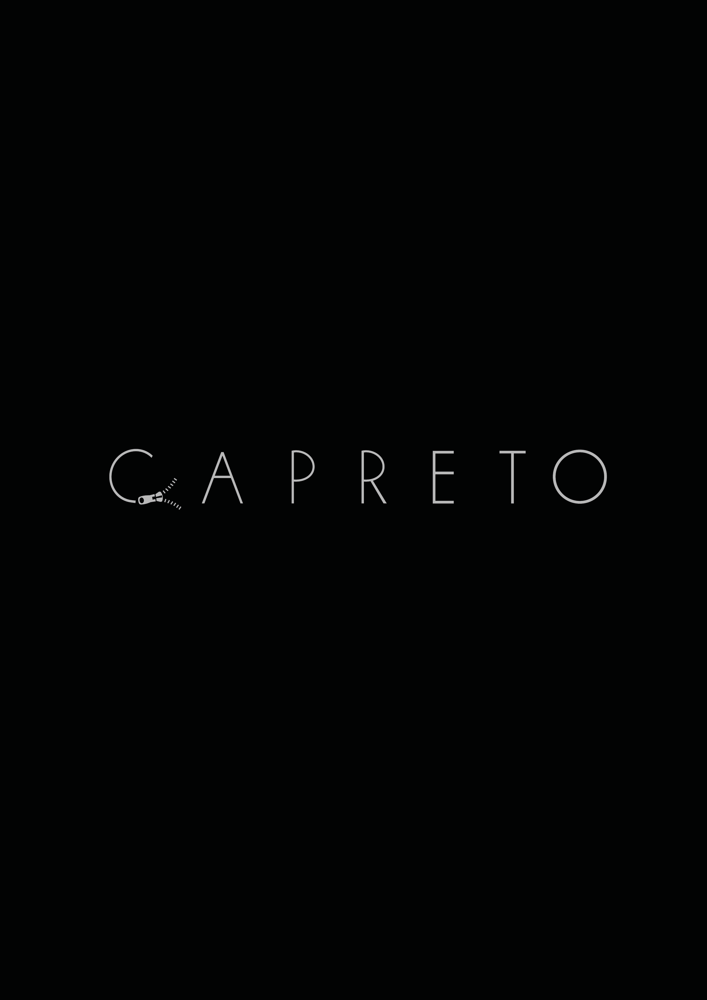

This project arose under the curricular unit of Communication Design II of the 2nd year of the degree.
For the elaboration of this project we were asked to choose an object and an adjective and put the two words together to create the name of a simulated brand, the words I chose were "casaco" and "preto" which resulted in the word "capreto".
After having in our pose the name of the simulated company we had to think about what this name tells us about the brand, that is, if Capreto were real what kind of company it would be, so after some reflection I decided that Capreto would be a luxury clothing brand.
After all these decisions were made it was time to move forward with the project, this would include the creation of a logo, a business card, a letterhead and the elaboration of a poster that I later took the decision to transform the poster into a notebook.